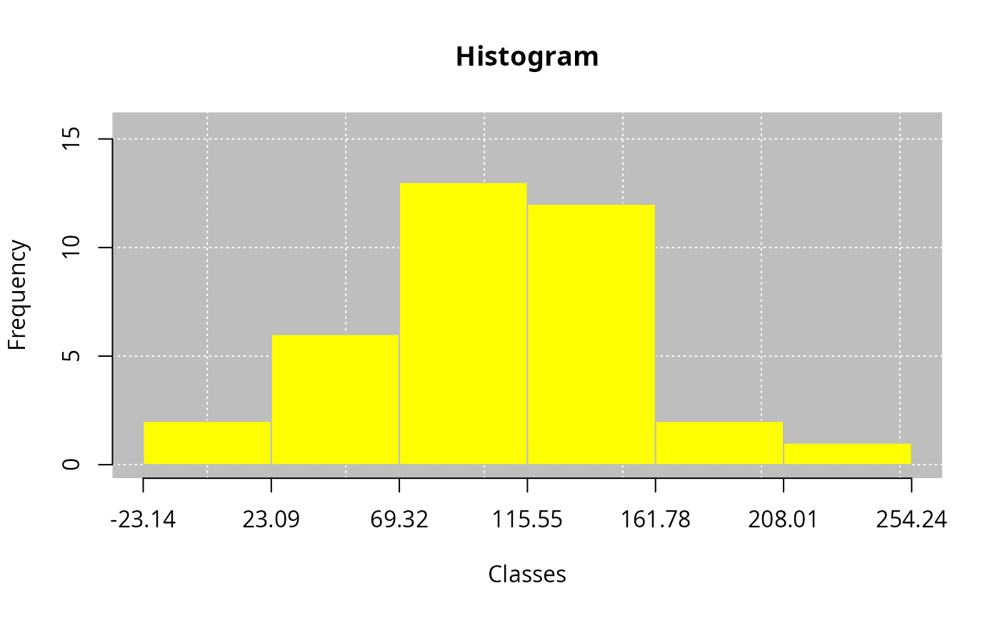

Class method leem for generic hist
Arguments
- x
R object (list) of class leem. Use
new_leem()function.- freq
Character argument. Type of frequency with options:
"a"(absolute and default),"r"relative and"p"percentage.- bg
Logical argument. Default is
TRUE, it displays the background, andbg = FALSEotherwise.- main
Insert the plot title. The default is
NULL.- xlab
Insert the title of the x-axis graphic label. The default is
NULL.- ylab
Insert the title of the y-axis graphic label. The default is
NULL.- grids
Insert grids to plot. The default is
grid(col = "white").- bgcol
Insert the background color. This argument is only valid when
bg = TRUE. The default isbgcol="gray".- bgborder
Insert the background border color. This argument is only valid when
bg = TRUE. The default is bgborder = NA.- barcol
Insert the barplot color. The default is
barcol = "yellow". This argument is only valid whenbars = TRUE.- barborder
Numeric argument. Insert the barplot border color. This argument is only valid when
bars = TRUE. The default is barborder = "gray".- ...
further arguments passed to or from other methods.
Examples
# Example 1
library(leem)
rnorm(36, 100, 50) |> new_leem(variable = "continuous") |> tabfreq() |> hist()

# Example 2
library(leem)
school <- rep(c("high", "university", "basic"), 3:5)
sample(school, 30, TRUE) |>
new_leem() |>
tabfreq(ordered = c("basic", "high", "university"))
#>
#> Table of frequency
#> Type of variable: discrete
#>
#> Groups Fi Fr Fac1 Fac2 Fp Fac1p Fac2p
#> 1 basic 12 0.40 12 30 40 40.00 100.00
#> 2 high 10 0.33 22 18 33 73.33 60.00
#> 3 university 8 0.27 30 8 27 100.00 26.67
#> ==============================================
#> Groups: Discretized grouping
#> Fi: Absolute frequency
#> Fr: Relative frequency
#> Fac1: Cumulative frequency (below)
#> Fac2: Cumulative frequency (above)
#> Fp: Percentage frequency
#> Fac1p: Cumulative percentage frequency (below)
#> Fac2p: Cumulative percentage frequency (above)
#>